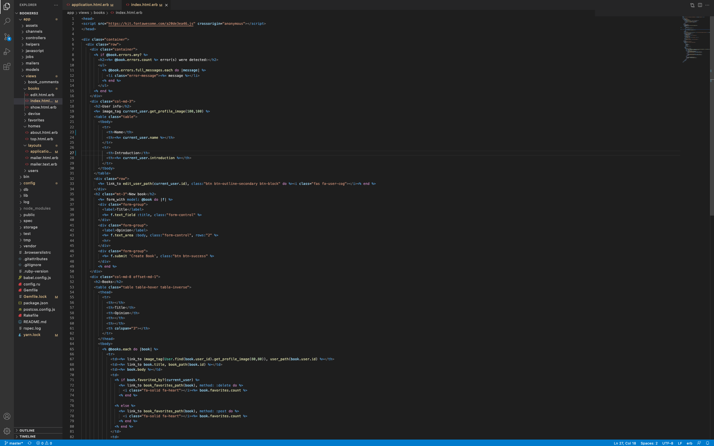
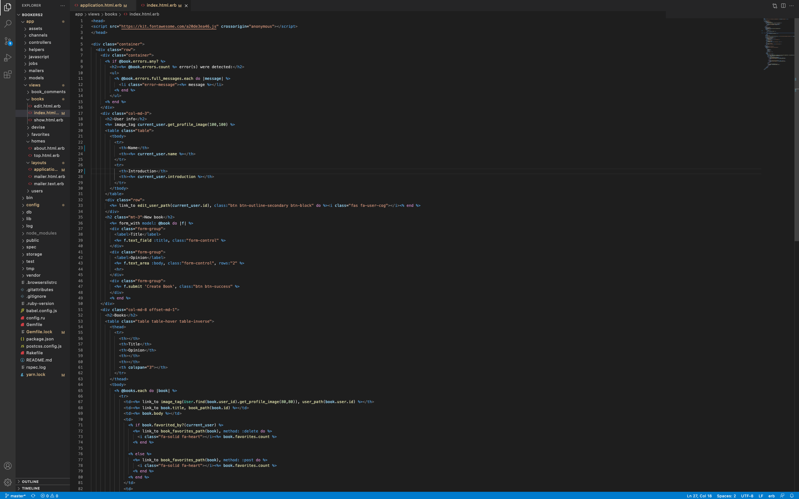
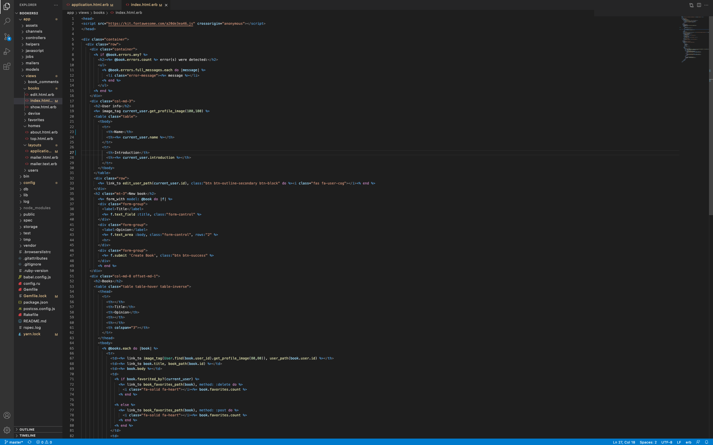

長期インターンの研修課題にて、Ruby及びRuby on Railsを新たなプログラミング言語として習得しました。Bookersという、ユーザーが読んだ本のタイトルと意見を投稿し、投稿に対していいねやコメントができるという簡易的なアプリケーションを作成しました。
この課題を通して、初めてデータベース機能を持つアプリケーションを作成する経験ができました。今まで制作してきたプログラムやウェブサイトはデータベースがないものでした。そのため、投稿フォームや投稿の保存と表示をする際のフローを理解することに苦労しましたが、１ヶ月という短い期間で言語を学習し、プロジェクトを完成することができました。
本インターンでは、エンジニアへの転職を志望する方々のプログラミング学習をメンターとして支えるという業務を行っていました。そのため、様々な背景を持つ方々とのコミュニケーションをすることを学べた上に、メンターとして簡潔に、順序立てを行うことでわかりやすく話す能力も身につきました。
